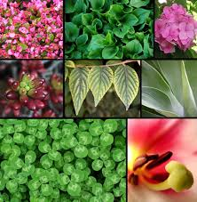
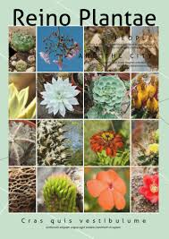
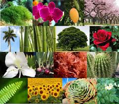
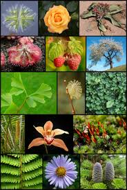
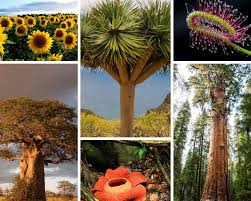
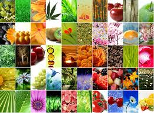

El Reino Plantae, también conocido como el reino de las plantas, es un grupo taxonómico que incluye a todos los organismos multicelulares que realizan la fotosíntesis. Las plantas son organismos autótrofos, lo que significa que pueden producir su propio alimento utilizando la luz solar, el dióxido de carbono y el agua a través del proceso de fotosíntesis. Este reino abarca una amplia variedad de organismos, desde pequeñas algas hasta grandes árboles. Las plantas desempeñan un papel crucial en los ecosistemas al proporcionar oxígeno, alimento y hábitats para otros organismos.


En biología, se denomina plantas a los organismos con células vegetales que poseen paredes celulares y se componen principalmente de celulosa. En general, son fotosintéticos, sin capacidad locomotora o de desplazamiento, aunque sí presentan movimiento, causado por estímulos externos.


Taxonómicamente están agrupadas en el reino Plantae y, como tal, constituyen un grupo monofilético eucariota conformado por las plantas terrestres y las algas que se relacionan con ellas; sin embargo, no hay un acuerdo entre los autores en la delimitación exacta de este reino. La rama de la biología que estudia las plantas es la botánica, también conocida como fitología.


En su circunscripción más restringida, el reino plantae (del latín: plantae, "plantas") se refiere al grupo de las plantas terrestres, que son los organismos eucariotas multicelulares fotosintéticos, descendientes de las primeras algas verdes que lograron colonizar la superficie terrestre y son lo que comúnmente llamamos "planta" o "vegetal". En su circunscripción más amplia, se refiere a los descendientes de Primoplantae lo que involucra la aparición del primer organismo eucariota fotosintético por adquisición de los primeros cloroplastos.